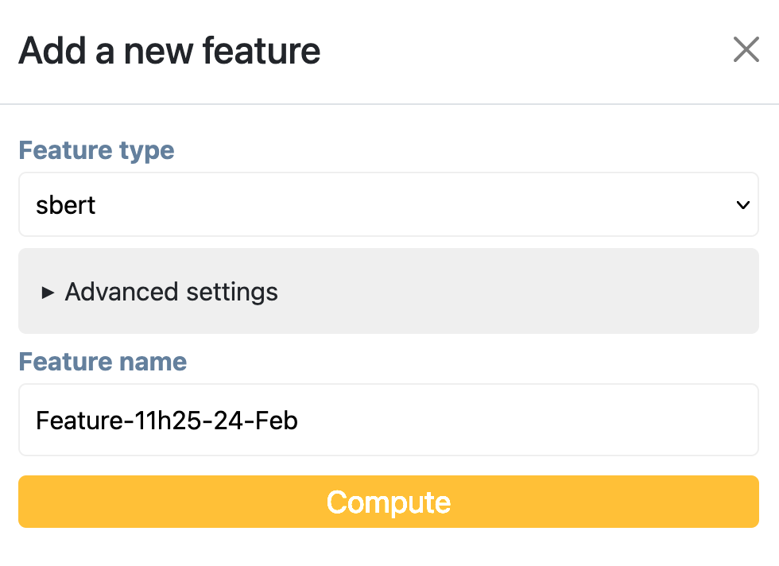
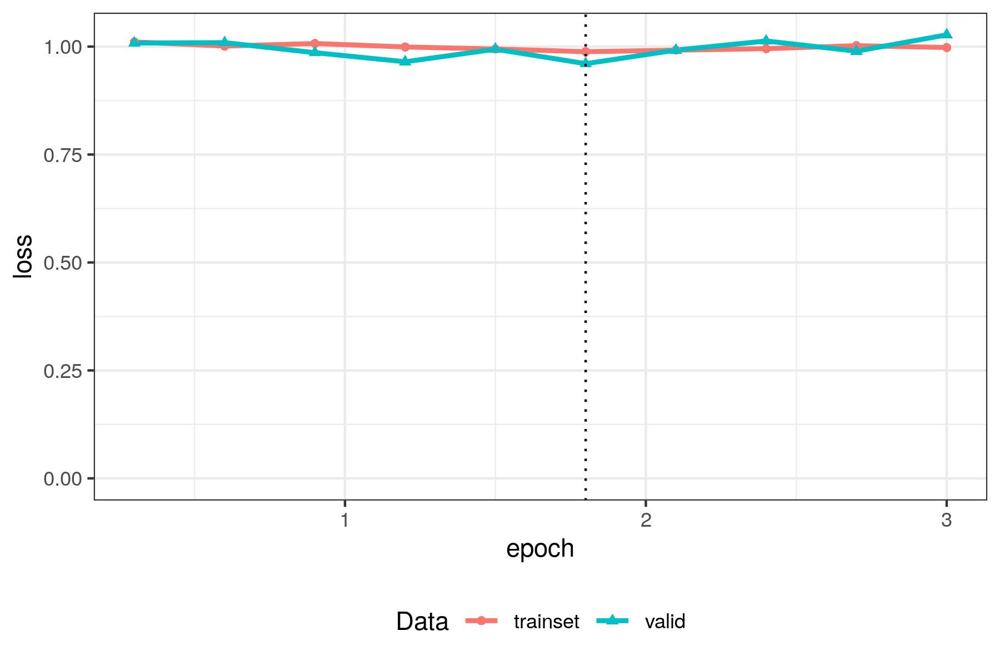
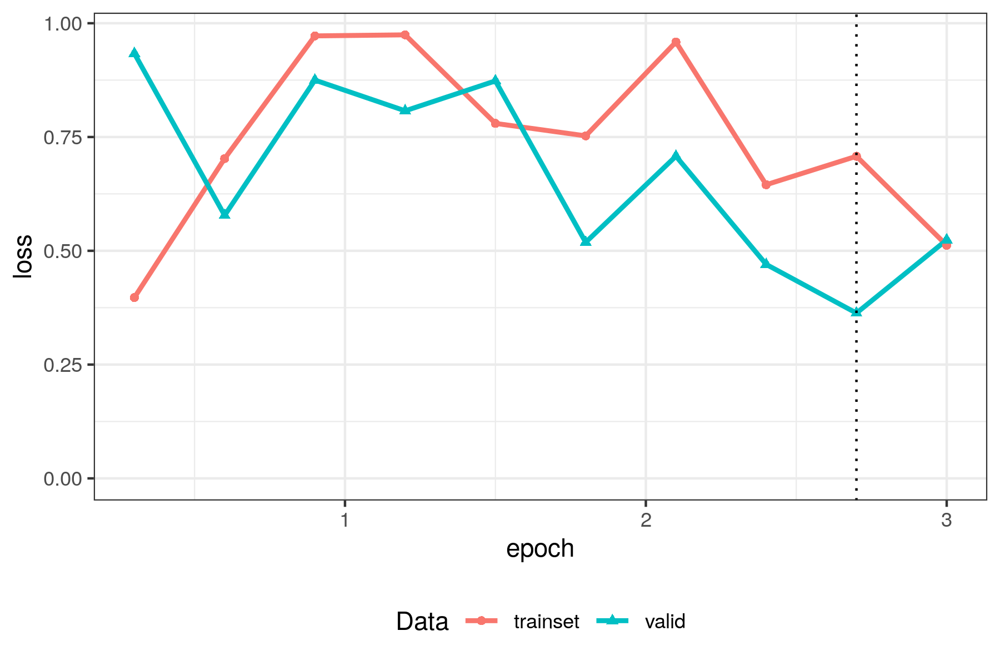

General concepts in Active Tigger
Train, Validation and Test sets
In supervised machine learning (aka predictive models), it is common practice to split your dataset into three subsets: the training, validation, and test sets. The reason for this is to control overfitting, which happens when a predictive model performs great on its training set, but fails to generalize to observations it hasn't seen before.
In Active Tigger, this split is performed when creating a project through the "Number of rows in the train/validation/test set" options. Validation and Test sets are optional, but they are strongly recommended if your goal is to train predictive models. Note that, once a project is created, you can also expand the size of the training set, and import external validation or test sets, in the Settings tab.
Each set plays a different role:
- train set: this is the part of your corpus that will be used to train models. Note that this set is itself often split into a main training and a train-evaluation subsets (see below).
- validation set: this is used to choose which model you will use for final prediction, based on the Evaluation scores in the Model panel.
- test set: this is used to evaluate the generalization quality of your final model. Do not use this choose models, otherwise your evaluation scores will not be valid (see Goodhart's law).
In active tigger, we enforce some "good practice" measures:
- the split is performed before annotating, at project creation, so that the choice of validation and test sets is not influenced by choices made during annotation of the training set
- model predictions (and active learning features) are not available when annotating validation and test sets, in order to prevent the annotator from being influenced by model predictions.
- by default the split is performed using uniform random sampling at project creation (except if "Select rows at random" is manually unchecked in the Advanced options), so that they are representative samples of the complete corpus. You may also choose to stratify them according to some variables in your dataset (SEE Glossary).
A frequent question is "How large should my different sets be?". While there is no golden answer to this question, here are some guidelines:
- The training set will be the largest, and you will typically not annotate all of it, especially if using active learning. Because of this, you can make it as large as you want, especially if some of the classes you are looking for are infrequent.
- The validation and test set size mainly depend on how precise you want your model evaluation to be, how much data you are willing to annotate, and the expected frequency of the classes you are annotating. One rule of thumb is to have at least 100 observations of each label: if your smallest class is expected to appear in 20\% of texts, use 500 validation and test cases. You can also make the sets a bit larger and not annotate them completely, if you annotate them in random order.
Another frequent question is "When should I annotate my different sets?". We recommend starting by annotating your training set first, in order to get a feel for your corpus and to stabilize the guidelines for your scheme. Only start annotating the validation and test sets once you are sure of the precise definition of each of your labels.
One last subtlety is that, during model training, the training set is usually further split into a main training and a train-evaluation subsets, the second one typically at 20\% of the training set. This is done in order to get an indication of how well the models are performing before putting effort into annotating the "real" validation sets, and in order to optimize training hyperparameters (SEE BERT CURVES)
Representing texts with Features
When doing statistics on texts, the first step is always to transform each text into numbers. This is what features are: numeric representations of texts. These features can then be used to compute visualizations, topics, and quick models. Note that they are not required for BERT models (or generative LLMs), as these automatically compute their own features internally.

In Active Tigger, there are five kinds of features, which can be created in the Settings tab:
- Sentence embeddings ATTENTION POUR L'INSTANT C'EST SEULEMENT EMBEDDINGS: the most powerful type. They use transformer models to represent a complete block as a whole. Note that, despite their name, these embeddings are computed for a whole block of text, not sentence by sentence. Also, note that different models have different context window sizes: many (older) models only consider the first 512 tokens, the rest are discarded. See the sentence-transformers package for more details, and the HuggingFace pages for details about each model.
- fastText: these are word embeddings. Each text is first split into words (this is done using the SpaCy tokenizer, with the selected language), then one embedding is computed for each word, and finally the text embedding is computed as the average of its word embeddings. Note that the order of words is not taken into account in this method. See the fastText webpage for details.
- DFM: a document-feature matrix. This was the main way of transforming texts into numbers before the advent of neural language processing. Each text is first split into words (this is done using the SpaCy tokenizer, with the selected language), and then a large matrix is created, where each document is a row, each column a term, and each element the number of times the term appears in the document (or a transformation thereof). See the DFM OPTIONS section for more details about the ways to compute a DFM.
- regex: regular expressions. For a given regex, the feature will be single binary variable, representing its presence or absence in each text.
- dataset: a variable that is present in the dataset. This can be useful when training quick models, for instance if you have a variable that measures the number of characters, or the text's source.
Generally, the recommended features are Sentence embeddings for computing visualizations, topic models, and quick models. For quick models, they can be used along with regex features, if there are some keywords that are particularly informative (or that you want to disambiguate). In low-resource environments, fastText or DFM embeddings can be used instead of sentence embeddings.
What is Active Learning ?
Active learning is a method that makes tagging more efficient: less annotations will be required to train a good model.
The main principle is that, once a first model is trained, the next texts chosen for annotation will be the ones about which the model is least confident (mathematically, the highest entropy of predicted probabilities). This is more efficient than choosing texts at random because it forces the user to tag ambiguous texts, the ones that will be the most helpful for training the next model. In practice, this is often helpful for the user as well: being confronted to difficult, ambiguous cases helps her refine her guidelines.
In Active Tigger, there are several ways to use models for next text selection, controlled through the "Selection method" option once a model is activated in the Annotate panel:
- Active: highest entropy, as described above
- Max Label: highest predicted probability for the chosen label. We have found this to be useful in practice, because a model can be wrong in its certainties, especially in the early stages with few annotations, for instance when it confuses what the user is looking for with the general topic of the texts. It can also be useful if your goal is to find all the positive cases of a rare category in your corpus.
- Min Label: lowest predicted probability among the observations that the model predicts as the chosen label. This is a sort of active learning focusing on a specific label.
If your goal is ultimately to train a BERT model, the correct practice is to choose the last trained BERT model as the active model in the Annotate panel. This will require you to first click the "Compute predictions" button in the Model tab, as they are not computed automatically (prediction uses resources and can take a long time). ATTENTION POUR LE MOMENT SEULEMENT "Compute statistics on current annotations" dans Validate.
Training Quick models
Quick models are standard supervised machine learning models, trained on features in order to predict labels. Compared to BERT models, they are lightweight and quick to train, hence their name. They are typically used in the early stages of annotation, as described in the workflow above.
TODO: quick model details (in Glossary?)
Training BERT models
What are BERT models?
(BERT models)[https://en.wikipedia.org/wiki/BERT_(language_model)] are powerful predictive models, that you can use in order to generalize your annotations to a larger corpus (either your project's dataset, or an external one). They are pre-trained non-generative language models, meaning that they have been trained on very large corpora in order to incorporate semantic "understanding", and that they are meant to be fine-tuned on your own annotations.
Fine-tuning a BERT model is the process of adjusting its internal weights. This is done by (gradient descent)[https://en.wikipedia.org/wiki/Gradient_descent], an algorithm that gradually adapts the weights based on the training data, over a number of steps (determined by Epochs and Batch size, see table below). As with all neural networks, this is a delicate art, usually involving some trial and error. Use the loss curve (see below) and evaluation scores (see Glossary) to determine how good each fine-tuned model is.
Which model to choose?
There are many different pre-trained models to choose from, hosted on the (huggingface)[https://huggingface.co/] website. The main difference between them is the corpus they have been pre-trained on (most of them are specialized in a single language), and their inner architecture (which among others determines the window size, ie the length of text they can process). There is no golden rule for which model to choose: try different ones, and see which one works best on your data (see the Model quality scores section in the Glossary, and Reading the loss curve below).
Reading the loss curve
The first tool to determine how well a fine-tuning went is the loss curve, which is displayed as a graph. The x-axis represents the number of training epochs, and the y-axis represents the loss (lower is better). There are two curves, for the training and evaluation subsets. The vertical line shows which training checkpoint has been saved.
Here are some general rules for obtaining a good model while avoiding overfitting. After training, use the quality scores for a detailed view of how the model is performing (see Glossary).
Just right

This is what you want to see:
- Both curves went down during training: the model has learned
- Both curves have the same loss values: no overfitting
- The curves are flat at the end: nothing more to be learned, apparently
Now you only have to look at the evaluation metrics to see if you are satisfied with the prediction quality.
Overfitting

The model has overfitted:
- Both curves went down during training: the model has learned
- But the training curve is much lower than the evaluation curve
What to do:
- choose a lower step size, for slower weight updates
- use larger batches, in order to smooth training over more examples per training step
- choose higher weight decay: this will prevent the weights from getting to large
- annotate more data, you may not have enough examples for the model to learn from
Underfitting

The model has underfitted: - Both curves are flat, the model has learned nothing
What to do:
- choose a higher step size, for faster weight updates
- use smaller batches, as this will result in more training steps
- choose lower weight decay: too high regularization can prevent proper learning
- annotate more data, you may not have enough examples for the model to learn from
Incomplete learning

The model could learn more:
- Both curves went down during training: the model has learned
- Both curves have the same loss values: no overfitting
- But there is no plateau at the end, the curves are still going down
What to do:
- use more epochs, to give the model time to learn more
- choose a higher step size, for faster weight updates
- use smaller batches, as this will result in more training steps
- choose lower weight decay: too high regularization can prevent proper learning
Chaotic learning

The model is trying to learn too fast:
- Curves should be going down, not up and down
- Some learning has occurred, but you can probably do better
What to do:
- choose a lower step size, for slower weight updates
- use larger batches, in order to smooth training over more examples per training step
- choose higher weight decay: this will prevent the weights from getting to large
- annotate more data, you may not have enough examples for the model to learn from
Which hyper-parameters to choose?
Base parameters
| Name | Type | Description | Typical value |
|---|---|---|---|
| Model base | General | Which pre-trained model will be fine-tuned. Larger models need more training data. |
|
| Max context window | General | The number of tokens that will be used during training for each text. Use Auto adjust Max context window in order to use the number of tokens of your longest training text. Lower values make training faster and use less memory. |
|
| Epochs | General | The number of times your training data will be presented to the model | 3 |
| Learning rate | General / Regularization | How much the model's weights will be changed at each step | 1e-5 to 5e-5 (3e-5) |
| Weight decay | Regularization | Prevents model weights to become too high | 0.01 |
Advanced parameters
| Name | Type | Description | Typical value |
|---|---|---|---|
| Total batch size | General / Regularization | How many training examples are presented at each step. Total batch size = Batch size x Gradient accumulation. |
16 or 32 (16) |
| Batch size | General / Regularization | Number of examples that are loaded in memory at any one time. | 1-32 (4) |
| General / Regularization | Number of batches that will be used before performing a gradient descent step. Use higher values for small GPUs. |
1-32 (4) | |
| Eval | General | Number of times the model will be evaluated on the evaluation set during training (aka checkpoints). | 9 |
| Train-eval split size | General | Portion of the data that will be used for evaluation during training. | 0.2 |
| Balance classes | General | Whether to use only the number of observations of the smallest class during training. | Deactivated |
| Loss | General | Which loss function is optimized: use Weighted cross entropy for unbalanced class | Cross entropy |
| Keep the best model | General | Whether to keep the best checkpoint according to evaluation loss, instead of the final checkpoint. |
Activated |
| Class threshold | Data | Minimum number of observations for a class to be used during training. Use higher values to exclude small classes. |
1 |
| Labels to ignore | Data | Which classes to ignore during training | None |
How many annotations do I need?
Again, there is no golden rule: it depends on the difficulty of the classification task.
A few dozen annotations per class might be enough for a simple task on short texts, but you might need several hundreds if you are looking for subtle details in longer texts.
In general, more is always better, but it also depends on how useful your annotations are (see Active learning section).
Projections
A projection is a 2D (dimensional reduction)[https://en.wikipedia.org/wiki/Dimensionality_reduction] of your training data, used for visualization (in the Explore panel).
It uses an unsupervised model in order to reduce high-dimensional features (see below) to two dimensions: similar texts will be grouped together.
The resulting visualization will help detecting outliers, and will group texts according to general themes.
In classification workflows, it is recommended to use projections to get a first overview of your corpus, and to determine whether you need to perform some more cleaning and filtering before annotating texts and training models.
Note that the placement of texts in the visualization does not tell you everything you want to know about your corpus.
This reflects the difference between unsupervised and supervised learning: unsupervised learning is only based on features, while supervised learning is meant to find the relationship between features and labels.
In many cases, different annotations will appear close together in the projection: this means that your classification scheme goes beyond topic modeling.
TODO: details and links (in Glossary?)
Topic models
A topic model (in the Explore panel) is an unsupervised model meant to capture the main themes that are present in a corpus, based on text features.
Active Tigger features BERTopic models, which work in two successive steps: first a dimensionality reduction step (as in Projection, see above), then a clustering step.
Topic modeling can either be an end in itself, or a useful step in a annotation/prediction workflow.
If your goal is to find the main topics in your corpus, you can use topic modeling as a first approximation, and then Convert to scheme in order to refine this using additional annotations and modeling.
TODO: details and links (in Glossary?)